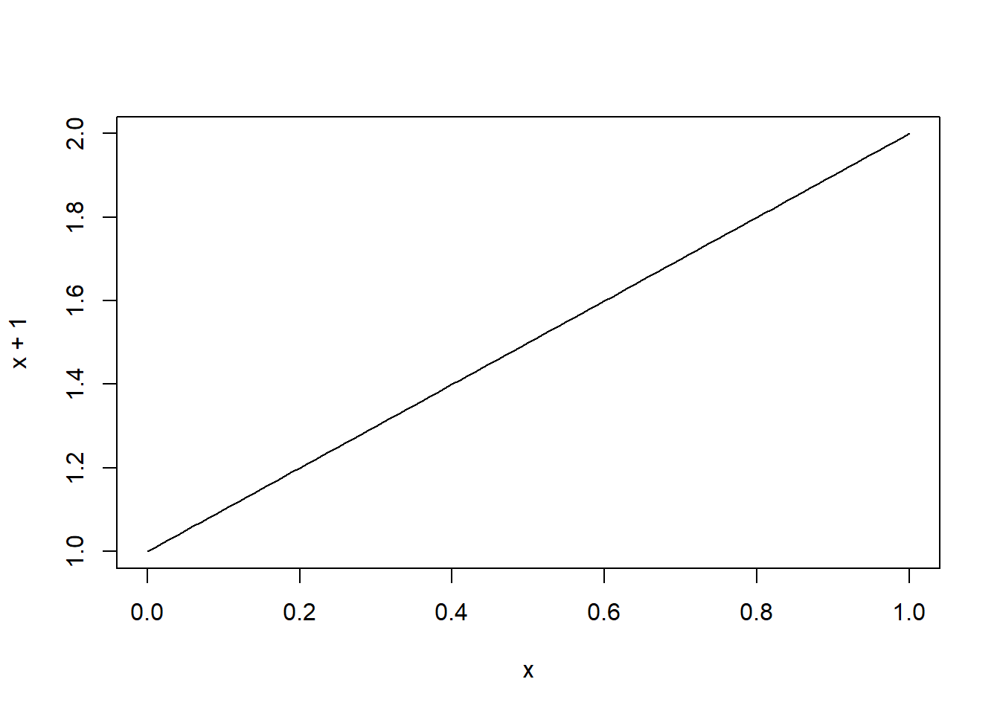
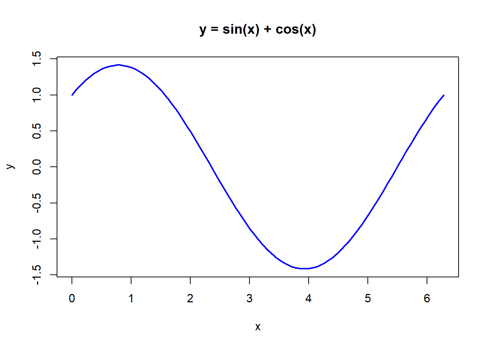

curve(expr = x+1)
Ben Welman
4 april 2020
Hoe je snel en eenvoudig grafieken kunt maken met de functie curve.
Een zeer handige functie in R is curve() waarmee je op een eenvoudige manier grafieken kunt tekenen. De syntax is
curve(expr, from = NULL, to = NULL, n = 101, add = FALSE,
type = "l", xname = "x", xlab = xname, ylab = NULL,
log = NULL, xlim = NULL, ...)expr - de naam van een functie of een expressie in termen van x.from, to - het domein waarop de grafiek getekend wordt.n - het aantal x-waarden dat geëvalueerd wordtadd - logische waarde om aan te geven of de grafiek aan een bestaande grafiek moet worden toegevoegd.xname - karakter voor de variabele in het functievoorschrift (standaard x)Een zeer eenvoudige opdracht is de volgende
Voor de functie f(x) = x kun je niet expr = x gebruiken. Je krijgt dan een foutmelding omdat dit niet als een expressie herkend wordt, waardoor gezocht wordt naar een object met de naam x. Je kunt de foutmelding vermijden door expr = (x) of expr = x^1 te gebruiken.
curve(expr = sin(x) + cos(x), from = 0, to = 2*pi,
ylab = "y", main = "y = sin(x) + cos(x)", col = "blue", lwd=2)
Erg handig is verder om tevens gebruik te maken van grid() die een rechthoekige grid van nx bij ny aan een bestaande grafiek toevoegt. Deze heeft als argumenten
nx, ny - het aantal rasters in de x en en y richting (standaard de waarden van de assen)col: kleur gridlijn (standaard “lightgray”)lty: type lijn (standaard “dotted”)lwd: breedte lijnequilogs: alleen in gebruik bij logoaritmische schaalIn het volgende voorbeeld wordt de grid gebruikt met daarnaast de schaal voor de y-as. Hierdoor kun je goed zien dat je de grafiek van \(|x^2 -1|\) kunt krijgen uit de grafiek van \(x^2 -1\) door bij deze laatste het deel dat onder de X-as ligt te spiegelen t.o.v. de x-as.
Nadat de eerste grafiek getekend is kun je meerdere grafieken toevoegen via het argument add = TRUE.
Met het argument log kun je een logaritmische schaal (natuurlijke logaritme) specificeren. Mogelijkheden: log = "x", log = "y" en log="xy". Zie hierna het voorbeeld voor \(y = e^x\).
De naam van de variabele in het functievoorschrift is standaard x. Met het argument xname kun je deze wijzigen.